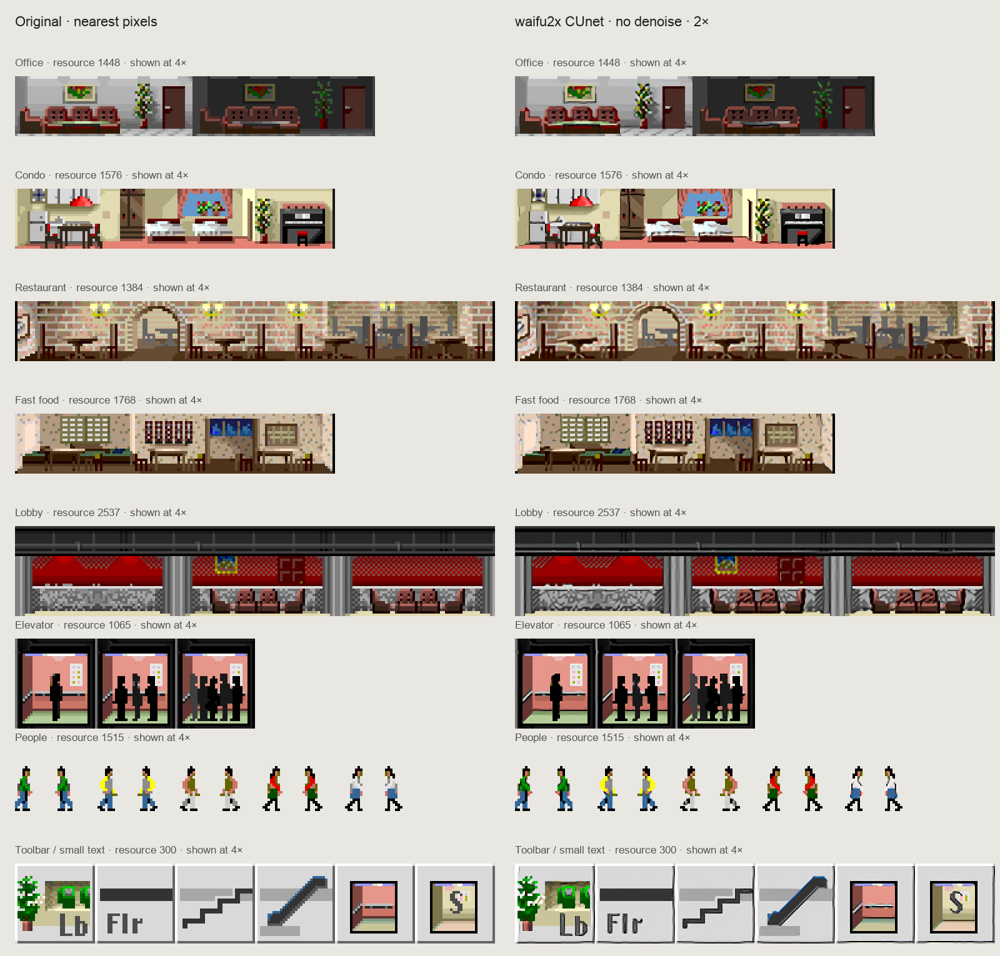

Original pixels · nearest-neighbor rendering
Upscaled · 2× texture resolution
Drag either scene to move both views. Pause is implicit: both panels show the same fixed simulation state. On a Retina screen, 1× game size maps each 2× texture pixel to one display pixel.
AI changes edge shapes and can merge tiny details. White transparency uses the exact original silhouette. Animated sky colors and the minimap keep their original pixels to preserve palette cycling. Full sheets were processed together; animation consistency and frame-edge bleed need further review before adoption.
Original and waifu2x side by side · rooms, people and toolbar
Open full-resolution comparison
Tools: waifu2x ncnn Vulkan. All inference ran locally; no game assets were uploaded.